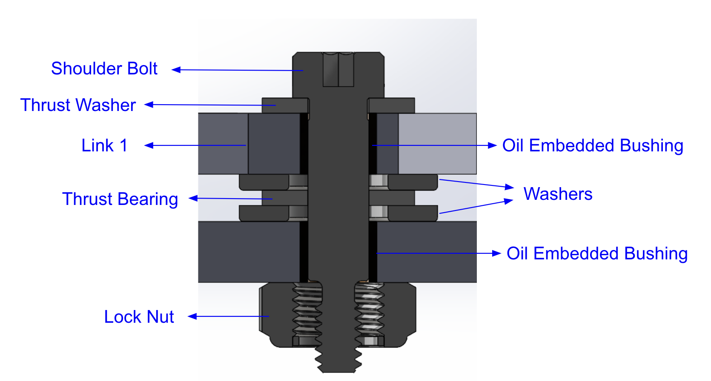

Mechanical Engineering Student at University of Michigan
GPA: 3.62/4.00 | Expected Graduation: May 2026
Get In TouchUtilized ANSYS and Solidworks to pioneer a unique freeze casting method, enabling the production of desirable microstructures for various applications. Developed expertise in manufacturing-informed design and material selection, creating a steel and copper structure with a dual power screw system to precisely lower the mold into liquid nitrogen, enabling a controllable freezing front. Gained hands-on proficiency in CAD modeling, manufacturing, and design ideation Built a solid foundation in circuit design, wiring stepper motors and programming Arduino for seamless electromechanical integration.
Employed Solidworks and ADAMS softwares to design a multifunctional robot with a rack and pinion arm, four-bar linkage system, and belt and pulley drivetrain. Developed machining skills, including using a mill, lathe, waterjet, and laser cutter. Acquired in-depth knowledge in GD&T, gears and linkages, and a wide range of manufacturing systems and processes, from metal casting to plastic forming.
Collaboratively designed and created components of a prosthetic arm for physically impaired patients, specifically focused around the tricep-forearm connection, stringing, and finger molding, to improve overall mobility and ease for every-day activities. Experienced in 3-D Printing, silicone molding, creating engineering drawings, stress/strain analysis, as well as Onshape, Fusion, and Solidworks CAD softwares.
The goal of this project was to design and manufacture a powered mechanism that automatically senses targets that pop up and shine a light on their corresponding photosensors. This was done through a 4 Bar linkage mechanism, consisting of the ground(baseplate), input, follower, and coupler links. As a a part of the competition the main scoring areas relied on transmission angle, weight, and overall performance in shining the light on the photosensors. The system is wired to an Arduino which we programmed in order to automatically sense the target and move the light to them.
Above is an image of our linkage design. Aluminum and steel alloys were the primary options for materials, we ended up using Aluminum 6061 as it is fairly strong but we wanted to optimize for weight and the mechanism is not undergoing sizeable loads, it just experiences high vibration and movement. Wherever we could we used 3D printed parts to further reduce weight, we ended up using it for the flashlight holder below the coupler (not pictured), the motor support, and the limit switch holder as these areas don't experience great stress and the parts did not need to be machined as the tolerances were not as important.

Above is a cross sectional view of our joint design, all joints on our linkage followed this design. We chose to use a robust steel alloy for our shoulder bolt to withstand lots of movement and any moment created from our linkage hanging off the baseplate. The washer/bearing stackup was used in order to reduce friction, allow for free movement, distribute the load over a greater area to reduce stress concentrations, and to mitigate binding of our links by allowing some separation.
Above is an example of one of the Engineering drawings for this project, the baseplate. For all parts, exterior geometry was water jetted, thus they are dimensioned to 2 decimal places. All mating geometry was milled, as you can see in the image interference and clearance holes are depicted and all holes and slots are dimensioned from the bottom left corner (datum).
Above is the Fritzing diagram for our mechanism to Arduino wiring. The motor encoder we used paired with the Arduino allows us to know exactly what position the mechanism is in and from there we were able to code it to move according to what flag was raised based on the proximity sensors. To optimize the code we ranked priority of the flags and reduced wait time error when multiple flags are up, so the mechanism wouldn't get confused.
The goal of this project was to design and manufacture a multifunctional robot that pushes a 15N block 2 meters, raise a half a kilogram magnet to attach to a lever, and drive over light switches to flip them. The entire process consisted of hand sketching multiple designs, deciding on one through a Pugh chart analysis, actually designing it on Solidworks, manufacturing each of the individual components, then putting it all together and testing.
Above is a CAD model of our robot, featuring an Aluminum 6061 structure for lightweight and strength. Instead of putting two more plates on the front and back we decided to use high strength carbon steel rods to prevent buckling and to provide structural support, while having less mass than aluminum plates. We chose to use polypropylene wheels that had enough friction to stick to the ground as we push the mass. And we also decided to use a rack and pinion arm to raise our magnet, selecting the number of stages for our planetary motor based on empirical testing.
Above is our first principles analysis of each of the motor options to see which motor we should select based on the load we had to push (required torque) and friction coefficient.
Above is an example of one of the Engineering drawings for this project, the electronics platform. For this part there were many holes of different kinds, so creating a hole chart was necessary to keep track of everything and make sure consistent datums were used.
The goal of this project was to develop a novel method to freeze casting. Traditional freeze casting consists of freezing a slurry to create a porous microstructure that has desirable mechanical properties while still being lightweight and useable for a variety of applications from electrical to medical. However, it is a very uncontrollable and random process, so this project was aimed at developing a system and method to control that process (temperature gradient) and be able to control what microstructure is produced.
Above are photos of the freeze casting system. The one on the left depicts the dual stepper motor system connected to a 3D printed extrusion that holds the mold, which is then lowered into the cool surroundings. Inside the cool environment is the image on the right, a copper structure with a removable cover to view the experiment during the freezing process. Copper was chosen as it has robust mechanical properties and very good thermal properties, so as it surrounds the mold it will keep it very cool and contain the freezing temperatures.
This image shows the actual system in real life from a top view. The copper structure is visible and the surrounding box is made of acrylic covered in thermal insulation. The front of the insulation and copper cover are removable to track the freezing process throughout testing.
The goal of this project was to design and build a 3D printable prosthetic arm for physically impaired patients. Each arm was highly functional, affordable, and tailored to specific patients. The reason 3D printing was chosen is that it is a highly controllable additive manufacturing process, that is fairly cheap and repeatable. As an organization our goal was to allow companies and patients to recreate our models themselves and adapt according to their own needs and 3D printing allows for that.
Above is an image of an early design of one of the arms. The tricep forearm connection in this case was made of lightweight steel, however in later iterations those parts were also 3D printed. The forearm is a low infill 3D print that houses the electronic components that allow for mobility. A lot of what I worked on was iterating through the tricep forearm connection, allowing for greater mobility in the elbow joint and hand joints, and creating adaptable models such as tablet usable fingers.
Above is a depiction of th e motor wiring diagram that connects the muscle sensor to the motor to allow for movement based on the patients needs and desires.
Above is an example of an engineering drawing of the hand and depicts the various flexion joints and areas for mobility.